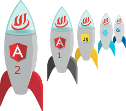

Objectives
Through this internship my aim is to achive within the specific time frame the following goals:
- Polish my skills in
- Learn new front-end languages and frameworks such as
- To be up to date with the latest graphic design techniques
- Understand the purpose of a Database
- Aquire a new perspective upon the IT Industry
HTML
CSS
WHY?
In my opinion, I hold basic knowledge about these two languages and most of my information was acquired through watching tutorials online. Having given the opportunity to be mentored by a proffesional I believe I won't be drawnback by any practical omissions.
JavaScript
PHP
Angular
BootStrap
WHY?
I am hoping to be able to create a website that comes to life and will raise an emotion to the user which causes him to revisit us in the hopes of seeing new designs. With my current knowledge I am able to develop only a 'static' website.
WHY?
Thanks to this branch, I was able to disover the 'fascinating world' of converting thoughts into reality. I want to develop my skills in creating modern designs and not only appreciating other's work.
WHY?
Knowing that through Database a website becomes more accesible for the user, I am keen on learning the about the link between the two.
WHY?
I strongly believe that the best way of knowing if a career is meant for you is by gaining experience from this specific domain, which means: analizing the environment, determining your limits, enhance and expand your knowledge.